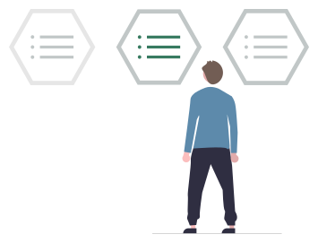
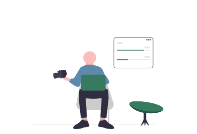

--- Un poco acerca de mí:
Hola! soy David Beltrán un reciente diseñador y desarrollador que ama la simplicidad en las cosas y crear páginas web de manera funcional.
Con capacidad de multitarea en programación de proyectos, por lo tanto puedo dar apoyo técnico al ciclo completo, desde el briefing inicial, pasando por wireframes, diseño web, maquetación, desarrollo, programación y la publicación final.

